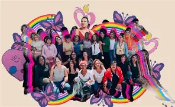

<!DOCTYPE html>
<HTML>
<HEAD>
<TITLE>logros</TITLE>
</HEAD>
<BODY></BODY>
<H1>GANADO</H1>
</HTML>
<P>sus logros y lucha constante</P>
</BODY>
</HTML>
<CATER>
</H1>
<BODY> 
<BR> A raiz del acesinato de su amiga paola y la protesta del 2016, Kenia  inicio una lucha que cambio la historia de los derechos trans en México,
<BR> fundo la <STRONG>"casa de las muñecas tiresias"</STRONG> un refugio para personas trans en situaciones vulnerables. logro que el caso de paola
<BR> se reabriera como el primer<STRONG>"trasfeminicidio"</STRONG>reconocido en el pais.
<BR>a influido en leyes, creando redes de apoyo y llevando su voz hasta la ONU, su activismo  a salvado vidas y dejado huellas inborrables en la historia.
<HR>
<BR> kenia cuevas en honor a su amiga abrio el primer albergue para mujeres trans en méxico llamandolo<STRONG>"casa hogar paola buenrostro"</STRONG> 
<BR>ya que con su partida kenia agarro fuerza para gritarle al mundo que estaba arta de no ser escuchada y marginada por su ex trabajo y identidad de no ser reconocida como los demas
<BR>y luchop y sigue luchando para que nadie mas sufra aquella discriminacion que le arrebato a su mejor amiga.
</BR>
<HR>
<BR>por ello fue reconocida con multiples premios como <STRONG>"mujer del año en 2020"</STRONG>  
<BR> incluso en la lista de <STRONG>"100 mujeres poderosas"</STRONG> por forbes en 2021 kenia cuevas una mujer que inspira a luchar por nustra dignidad.
<BODY BACKGROUND="fondo.jpg">
<a href="pagina2.html">volver a la pagina 2</a>
<BR>
<a href="pagina4.html">ir a la pagina 4</a>
</BODY>
</HTML>
<CENTER>
<BR>
 
</BR>